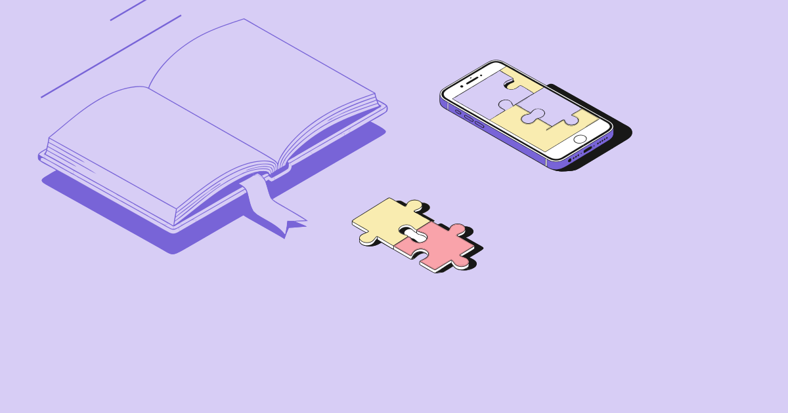
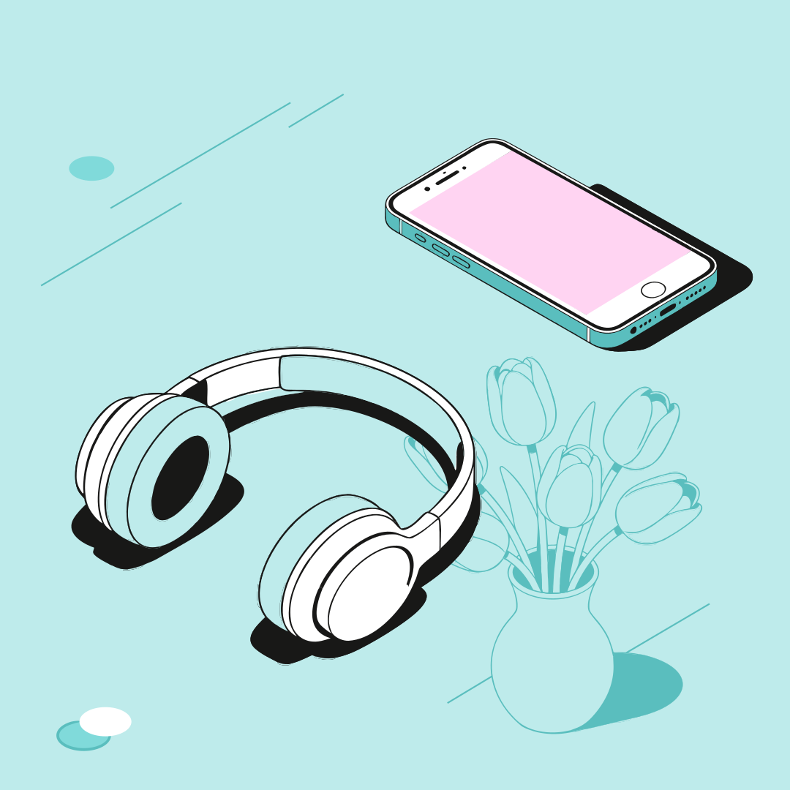
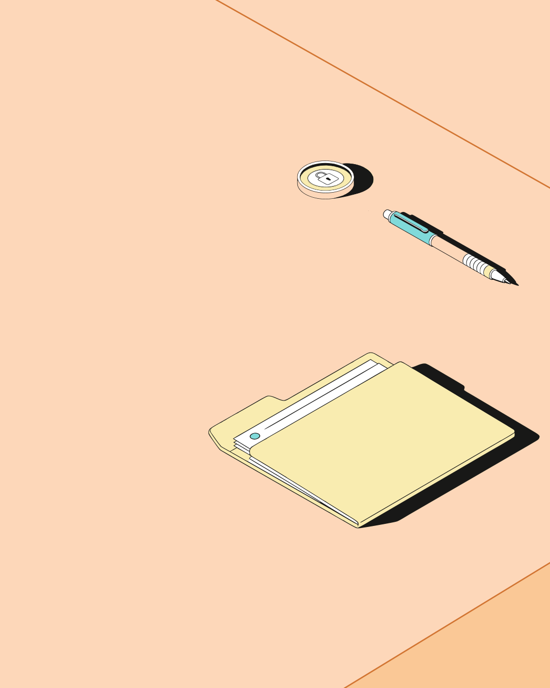

Три композиции из одной библиотеки
Откройте пример в редакторе, чтобы изменить композицию, сменить палитру, переместить объекты или выгрузить SVG. В третьем примере показан подбор по списку предметов с раскладкой под заголовок.





Для проверки импорта можно скачать пример собственной палитры и загрузить его в редактор.